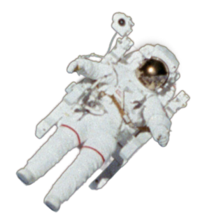

Привет! Я твое

тестовое задание
Я состою из разнообразных блоков и элементов, которые круто смотрятся вместе, особенно если их дополнить простой анимацией. Например, в этом блоке, космонавт должен парить при скролле при помощи параллакс-эффекта.
Я готов!